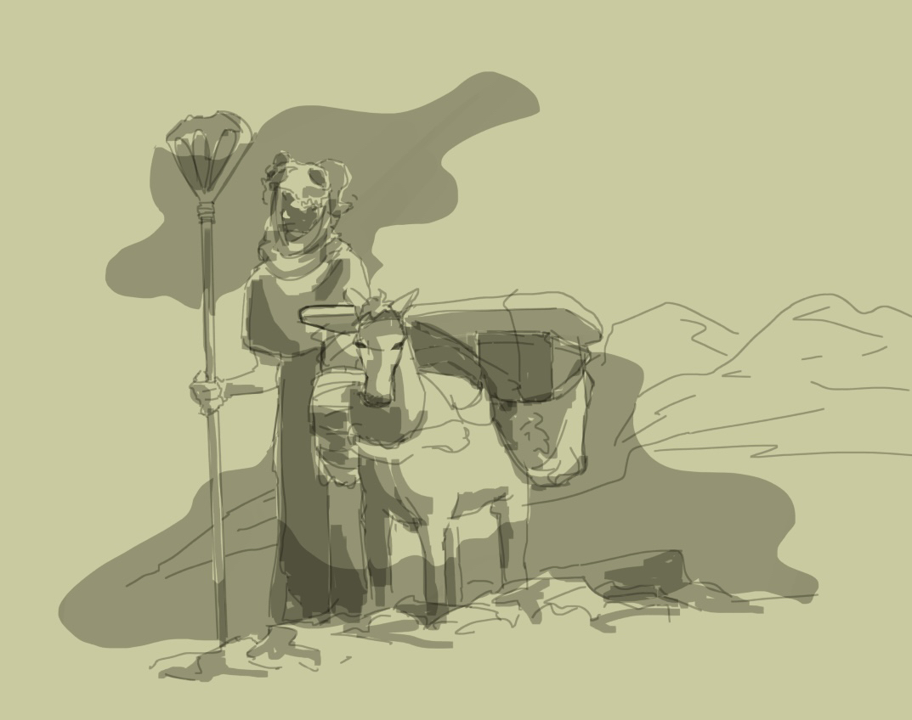

Esme always had a heart for adventure, as a child she would read books about adventure that inspired her to become an adventure. By the time she came of age Esme was itching to get out into the world. She had saved up money to visit the capital city and stay at an inn for a while. Esme explored the city and met many new people. In her tavern's inn she met Aesop, a tall, travel-worn man. He was a seasoned veteran of travels, Esme bought him a drink in exchange for a story. When the story came to an end Aesop offered the deal again: a drink of story. They went all night and as dawn shown through the crack in the wood. As dawn shown Aesop called the night and went off to bed. Esme's mind was racing from all that she had heard so in spite of her exhaustion she took a walk around the tavern. On her way back to her room she saw a glowing light under his tavern door.
Esme convinces Aesop to let her accompany him on his next voyage. She finds herself as she is getting lost in the new land. In the village she assimilated with those around her, not because they forced her to but just because she didn't know there was another way. Esme wore long flowing dresses, braided long hair and generally kept herself pretty. Over the course of the voyage Esme goes from a cottage core girl to a punk bruh girl. Aesop advises her not to wear a dress because it generally is not suited for trail blazing. Esme tells Aesop that she never even realized that was an option. From then on she found her style and started learning how to differentiate her opinions from the opinions others.
Pioneers are a tough people, who sought out a fresh start in the newly discovered land of the new world. Several colonies have sprouted up across the coast of the large peninsula. These colonies are largely self sustaining and are sponsored by large port nations in the old world who provide the colonies with new people and supplies. People in the old world refer to people live in the new world as pioneers, but in the new world the title of pioneer is reserved for those who venture deeper into the unknown lands. These pioneers form parties ranging from 15-40 men, Aesop is one of the few solo pioneers who fly solo when exploring beyond the relative safety of the colonies.
This is when Esme leaves for her first trip outside the town in which she grew up. Ever since she was little, Esme has had an adventurous spirit. She never felt trapped growing up in a small town, but as she grew older, she did long to see and experience the world outside her known sphere. Every birthday since she was sixteen, Esme begged her parents to fund a trip for her to the country's nearby capital. On her 18th birthday she got her wish, this comic is her setting off on that journey.
While inside the capitol, she meets her not so soon-to-be mentor at an inn, a man who introduces himself as Aesop. In exchange for buying him drinks, Aesop recounts to Esme incredible tales of adventurers in distant lands. After Esme has bought a few rounds, the barkeep feels bad for the girl and leans in close. He tells the girl "it's obvious your new to the city, just as obvious to me as it is that stranger on the other end of your booth. The man's taking advantage of your curiosity, that yarn he's spinning you is pretty but it ain't real." Esme goes back to Aesop demanding the truth. Aesop says "I may have embellished here and there, but not a lie has escaped my lips". Esme snaps up her stuff and heads to her room for the night. Laying in bed, feeling to stupid and angry to sleep, Esme's mind races as she thinks about getting tricked out of her money. After laying for hours staring at the ceiling, Esme lights a candle and tries to read her book. Still unable to focus, Esme puts on her coat and takes a walk to cool off. As she descends the staircase Esme sees Aesop alone reading by the firelight in a tall backed lounge chair, even the bar keep had thrown in the towel by that point. Aesop doesn't look up from his book and she hopes he failed to notice her.
Esme emerges into the cool night air, her breath visible as she exhales the Inn's warm smoky air. Instantly her cheeks feel less flushed and her head feels clear again. Her boots crunch beneath the heavy morning's snow. Esme walks for a long time, she sees the chimney smoke eventually run dry as the last patron heads to their bed. Not looking at the ground she slips on a buried patch of ice catching herself from falling backwards. Esme thinks to herself "That fall would've hurt in the morning. Every mistake I make on this trip is one I won't have to make moving forward. If I'm going to travel it's best I mess this up now than when I have to rely on myself for money. Although hopefully I won't get cheated again because I've spent too much of my cash already." Walking around the back Esme notices smoke streaming out from a room's windows. Just as her mind was beginning to calm down, Esme's heart began to race. "Someone's practicing magic in there" she thought to herself "But I can't see up into the window on the second floor". Esme grabbed the branches of a nearby tree and hoisted herself up. Settling into her perch, she held her breath and peered into the room. There, sitting cross on the floor was Aesop reading very intently from that same book, mumbling to himself. Esme exhaled a bated breath and, instantly, as if he could hear her from across the yard, Aesop's head shot up and looked directly at her. Esme flinched, her yelp turned into a scream as she lost her footing and fell backwards out of the tree.
Esme groaned in pain unable to move or catch her breath. After what felt like an eternity later Aesop lifted her up and took her inside. Seeing stars and gasping for breath Aesop placed Esme down on his bed. Aesop felt her collarbones and flipped her onto her stomach. He untucked her shirt and pulled it up over her neck, Esme's protests came out as a pitiful gasp. "Try not to exert yourself, you'd be seriously hurt right now if the morning's snow had been any lighter." Aesop ran his fingers along Esme's spine, he inhaled through his teeth. Aesop put pressure on several points along Esme's back, causing her to grimace from the pain. Aesop unlatched his luggage, instantly a mass of fog flumed out filling the room up to his ankles. He pulled something from the box and cursed, closing it quickly. He rubbed a warm, almost hot, paste into Esme's back. "It's not very polite to peek into people's rooms. Privacy is hard to come by in the city, so people hold what little they get sacred. I had half a mind to leave you to freeze tonight for taking that sacred privacy away from me". Esme nodded, her cheek scratching against the tough winter blanket. She rolled over and looked at Aesop who returned her gaze. "And next time be a little more careful when climbing trees." Esme chuckled causing lighting to shoot down her spine. "Am I going to be ok?" Esme asked. "You wont be mobile for a few weeks but you should heal up just fine, no broken bones, like I said before that snow broke your fall."
"A few weeks! My return caravan leaves in a few weeks!" Aesop looked down at Esme. "I'll take you back to your room." Esme winced as Aesop gingerly picked her up. He walked her back to her room. With her head against his chest Esme whispered "Thanks for not leaving me in the snow." as she began to drift to sleep. "I'm in room -" *Click*. "How did you know what room I was in? wait I never gave you my key either -". Esme tried to pull away but the pain stopped her, her body seized up as Aesop placed her on the bed. Aesop walked to the door, "goodnight girl." "Why did you have a key to my room?" Aesop's only reply was the click of the lock as he left.
The next morning Esme woke to a knock on the door. "I'm coming in, I've brought breakfast." Announced the Inn Keep before unlocking the door and entering. "Aesop told me what happened this morning, you poor thing, slipping on that ice out front. You're lucky he happened to be walking by last night or you could have been out till morning." said the Inn Keep.
"Where is he?" Esme asked.
"Aesop? Oh he left this morning, he had paid for two weeks in advance when he arrived, but he said you should have it, you poor thing, since you'll be in bed till at least then." said the Inn Keep.
Aesop wears long flowing robes with a large six & a half foot staff. Each of his items are enchanted by different magicians creating a mixture of multiple different kinds of smoke. This outfit he only wears when traveling because all the different smoke gives people around him headaches. Also the amount of smoke is much greater than the normal amount which is compounded by his wearing multiple items, this means he has to constantly be moving or walking around while wearing it or he risks suffocation.
Staff: his staff is large and cool.
Skull: The goat's skull he wears over his head acts both as a helmet for physical protection & as enchanted glasses. Aesop looks through the eyes of the skull which have stained glass that he looks through.
Font: Bahnschrift Light Condensed
